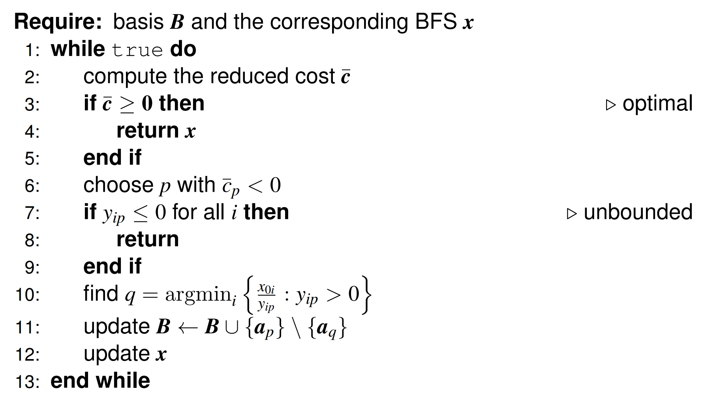
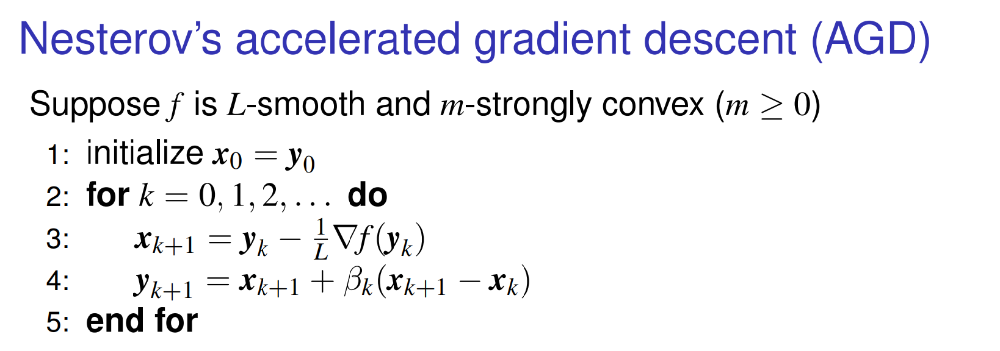

2_math
导数（Derivative）与梯度（Gradient）
f(x)的导数f′(x)是行向量，梯度∇f是列向量。
常见函数的导数：
- f(x)=aTx，则f′(x)=aT，∇f=a；
- f(x)=xTAx，则f′(x)=xT(A+AT)，∇f=(A+AT)x；
- f(x)=Ax，则f′(x)=A，∇f=AT；
总结
一般来讲求梯度用的比较多，因为梯度是n×m的，而自变量是n×1的，所以两者会比较相像（特别是m=1时，而大多数凸优化问题就需要用到这个情况）。
对于求梯度的方法，我们应该从里往外（对比：求导数是从外往里）。比如∇f(g(x))=∇g(x)∇f(g(x))
Range和Null
对于矩阵Q∈Rm×n，定义：
Range(Q)Null(Q)={Qx:x∈Rn}={x:Qx=0}
定义Rn向量集合A，则定义n维向量b⊥A为
bTx=0,∀x∈A
定义A⊥={b:bTx=0,x∈A}。
有$$\text{Range}(\bm QT){\perp} = \text{Null}(\bm Q)$$
证明
∀y∈Range(QT),∃x∈Rm,QTx=0
对于Null: $$\forall \bm b\in \text{Null}(\bm Q), \bm Q\bm b = 0$$
有: $$\langle\bm y, \bm b\rangle = \bm y^T \bm b = \bm x^T \bm Q\bm b = \bm x^T \bm 0 = 0$$
Hessian
记为∇2f(x)，是一个n×n的矩阵，有对称性。
Chain Rule
设g:Rm→Rn，f:Rn→R，则复合函数h(x)=f(g(x))的梯度为
∇h(x)=∇g(x)∇f(g(x))
导数的形式为
h′(x)=f′(g(x))g′(x)
这里定义梯度为导数（加科比）的转置。
Taylor Expansion
设f:Rn→R在点x处二阶可导，则对于任意的d∈Rn，都有
f(x+d)=f(x)+∇f(x)Td+21dT∇2f(x)d+o(∥d∥2)
正定
正定记为Q≻O；半正定记为Q⪰O；负定记为Q≺O；半负定记为Q⪯O。
- 如果Hessian正定（positive definite），则函数是严格凸（convex）的。
正定判别用顺序主子式。
- 如果Hessian半正定（positive semi-definite），则函数是凸的。
半正定判别用主子式。
- 如果Hessian负定（negative definite），则函数是严格凹（concave）的。
- 如果Hessian半负定（negative semi-definite），则函数是凹的。
如果不是正定或负定（indefinite），则函数既不是凸的也不是凹的。
特征向量与特征值（Eigenvalue and Eigenvector）
正定矩阵的所有特征值均为正；
半正定矩阵的所有特征值均为非负；
负定矩阵的所有特征值均为负；
半负定矩阵的所有特征值均为非正；
不定矩阵的特征值有正有负。
特征值分解（Eigendecomposition）。
二次型（Quadratic Form）。
二次型上下界
设Q∈Rn×n是一个对称矩阵，且其特征值为λ1,λ2,⋯,λn，则对于任意的x∈Rn，都有
λmin(Q)xTx≤xTQx≤λmax(Q)xTx
证明时利用对称矩阵可以被正交对角化。
First-order Necessary Condition for Convexity(一次必要条件)
设x∗是函数f:Rn→R的一个局部最小点，且函数在x∗可导，则有
∇f(x∗)=0
利用方向向量转化为单变量函数可证明。
如果x∗恰好在边界上（不在也成立），则对于任意的feasible direction d，都有
dT∇f(x∗)≥0
设Q∈Rn×n是一个对称矩阵，且其特征值为λ1,λ2,⋯,λn，则对于任意的x∈Rn，都有
λmin(Q)xTx≤xTQx≤λmax(Q)xTx
Second-order Necessary Condition for Convexity(二次必要条件)
设x∗是函数f:Rn→R的一个局部最小点，且函数在x∗二阶可导，则有
∇2f(x∗) is positive semi-definite
也就是说，对于任意的d∈Rn，都有
dT∇2f(x∗)d≥0
Second-order Sufficient Condition for Convexity(二次充分条件)
如果某个点x∗满足
- ∇f(x∗)=0；
- ∇2f(x∗) is positive definite；
则x∗是函数f:Rn→R的一个严格局部最小点。
3_convset
Line, line segment, ray
设x1,x2∈Rn，则通过x1和x2的直线（line）定义为
{x=θx1+θˉx2:θ∈R}
当θ∈[0,1]时，上述集合称为通过x1和x2的线段（line segment）；
当θ≥0时，上述集合称为从x1出发经过x2的射线（ray）。
线段上的点称为convex combination。
Convex Set
设C⊆Rn是一个集合，如果对于任意的x1,x2∈C及任意的θ∈[0,1]，都有
θx1+θˉx2∈C
则称C为Rn中的一个凸集（convex set）。
- intersection of convex sets is still convex set.
超平面
对于Rn中的一个非零向量w和一个实数b，定义集合
H={x∈Rn:wTx=b}
集合H称为Rn中的一个超平面（hyperplane）。
所以超平面方程为：
wTx=b
half-space：
wTx<b
Affine Space
Affine Space$$S = {x\in \mathbb R^n:\bm A\bm x = \bm b}$$是convex set。
Polyhedra
A polyhedron P={x∈Rn:Ax≤b} is convex.
可以视作多个超平面的交集。
显然Polyhedra的交集也是Polyhedron。
Norm balls
A closed ball B(x0,r)={x∈Rn:∥x−x0∥≤r} is convex.
Ellipsoids
An ellipsoid E={x0+Au:∥u∥2≤1},A≻O is convex.
利用特征值分解转化为一个norm ball的变体可以证明。
C is convex, f(x)=Ax+b,x∈C，则f(C)={Ax+b:x∈C} is convex.
Positive semidefinite matrices
The set of all positive semidefinite matrices S+n={X∈Rn×n:X=XT,X⪰O} is convex.
Convex Combination
凸集中多个点的凸组合仍在该凸集中（利用定义即可）。
Convex Hull
中文名为凸包。设S⊆Rn是一个集合，则S的凸包（convex hull）定义为包含S的所有凸集的交集，记为convS。
可以证明convS等于S中有限个点的所有凸组合的集合，即
convS={i=1∑kθixi:xi∈S,θi≥0,i=1∑kθi=1,k∈N}
Affinely Independent Points
设x1,x2,⋯,xk∈Rn是k个点，如果向量组
{x2−x1,x3−x1,⋯,xk−x1}
线性无关，则称点x1,x2,⋯,xk为Rn中的仿射无关点（affinely independent points）。
Simplexes
设x1,x2,⋯,xk+1∈Rn是k+1个仿射无关点，则称集合
conv{x1,x2,⋯,xk+1}
为Rn中的一个**k-单纯形**（k-simplex）。
probability simplex:
Δn={θ∈Rn:1Tθ=1,θ≥0}
is a simplex.
Convex Cone
设C⊆Rn是一个集合，如果对于任意的x∈C及任意的θ≥0，都有θx∈C，则称C为Rn中的一个锥（cone）。
如果C同时是一个凸集，则称C为Rn中的一个凸锥（convex cone）。
对于一个矩阵A∈Rm×n，定义集合
C={Ax:x≥0}
则C是Rm中的一个凸锥，称为由A生成的凸锥（convex cone）。
这里是怎么回事呢？将A写作列向量的形式：
A=[a1,a2,⋯,an]
则Ax可以写作
Ax=x1a1+x2a2+⋯+xnan
所以C中的元素就是A的列向量的非负线性组合。
证明C是一个凸锥：
-
锥的性质：对于任意的y∈C，存在x≥0，使得y=Ax。对于任意的θ≥0，有
θy=θAx=A(θx)
因为θx≥0，所以θy∈C。
-
凸集的性质：对于任意的y1,y2∈C，存在x1,x2≥0，使得y1=Ax1且y2=Ax2。对于任意的θ∈[0,1]，有
θy1+θˉy2=θAx1+θˉAx2=A(θx1+θˉx2)
因为θx1+θˉx2≥0，所以θy1+θˉy2∈C。
实际上，形象理解的话，凹进去的向量不会产生作用，只有突出来的有用。
Projection onto Convex Sets
定义x到C的distance为
dist(x,C)=z∈Cinf∥x−z∥2
设C⊆Rn是一个非空闭凸集，则对于任意的x∈Rn，存在唯一的x^∈C，使得
∥x−x^∥2=dist(x,C)
记为$$\bm{\hat x} = \mathcal P_C(\bm x)$$
证明：
存在性（existence）：随便找一个z0∈C，令K=B(x,∥x−z0∥2)∩C，则K是Compact Set，距离函数$$|\bm x - \bm z|_2$$对于z在K上连续，所以存在最小值点。
唯一性（uniqueness）：反证法，假设存在两个，则找中点，更近。
设C⊆Rn是一个非空闭凸集，x∈Rn，则x^=PC(x)的充分必要条件是对于任意的z∈C，都有
(x−x^)T(z−x^)≤0
证明：
x^=PC(x)⟺⟺∥z−x^+x^−x∥2≥∥x^−x∥2−2(x−x^)T(z−x^)+∥z−x^∥22≥0,∀z∈C,∀z∈C
当z=x^时，结论自然成立；
当z=x^时，可以看作一个关于∥z−x^∥2的二次函数，所以对称轴（cosθ）非正时，结论成立。这对应了结论中的不等式。
反之，很容易得到充分性。
∥x−y∥2≥∥P(x)−P(y)∥2
证明：
∥x−y∥22=∥x−x^+x^−y^+y^−y∥22=∥x^−y^∥22+∥x−x^+y^−y∥22+2⟨x^−y^,x−x^+y^−y⟩≥∥x^−y^∥22+2⟨x^−y^,x−x^+y^−y⟩=∥x^−y^∥22−2⟨y^−x^,x−x^⟩−2⟨x^−y^,y−y^⟩≥∥x^−y^∥22
其中最后一步用了上一个结论。
考虑非空闭凸集C，对于x0∈/C，存在w=0，满足$$\sup_{\bm x\in C}\langle\bm w, \bm x\rangle < \langle\bm w, \bm x_0\rangle$$
证明：令w=x0−P(x0)即可。
Supporting Hyperplane
根据以上推导，可以很自然引出Supporting Hyperplane的定义：
设C⊆Rn是一个非空凸集，x0∈∂C，则存在w=0，使得$$\langle\bm w, \bm x\rangle \leq \langle\bm w, \bm x_0\rangle = b, \forall \bm x\in C$$
构造一个数列{xk}，使得xk→x0，且每一个元素都在C外，利用之前结论即可证明。
这里需要用到一个Lemma:
If C is convex, then intC=intC且∂C=∂C。
Separating Hyperplane
两个非空凸集没有交集，就可以用一个超平面把它们分开。即存在w=0和b，使得$$\langle\bm w, \bm x\rangle \leq b, \forall \bm x\in C$$且$$\langle\bm w, \bm y\rangle \geq b, \forall \bm y\in D$$
做一个E={x−y:x∈C,y∈D}，则E也是凸集，且0∈/E。利用之前的结论即可证明。
Farka’s Lemma
设A是一个m×n矩阵，b∈Rm。则下列命题恰有一个成立：
- 存在x∈Rn，使得Ax=b且x≥0。
- 存在y∈Rm，使得ATy≥0且bTy<0。
证明较为复杂。首先可以得到命题1成立可以推出命题2不成立，所以两者不可能同时成立（使用coneA）。然后需要证明如果命题1不成立，则命题2成立（使用分离定理）。
4_convfunc
Convex Function
设C⊆Rn是一个凸集，函数f:C→R称为凸函数，如果对于任意的x1,x2∈C及任意的θ∈[0,1]，都有
f(θx1+θˉx2)≤θf(x1)+θˉf(x2)
其中θˉ=1−θ。如果不等式方向反过来，则称f为凹函数（concave function）。
Strict Convex Function：当x1=x2且θ∈(0,1)时，上述不等式严格成立（不取等）。
一个凸函数的连续一段要不是严格凸的（相对端点），要不是线性的。
Restriction to lines
f is convex iff for any x∈domf and any direction d, the function g:R→R defined by
g(t)=f(x+td)
is convex in its domain.
严格凸函数只要d=0且θ∈(0,1)时，上述不等式严格成立。
注意了，这里的direction d可以是任意向量，并不要求是单位向量。
证明比较简单，用对应关系就好。
Extended-value Extension
设f:C→R是定义在凸集C⊆Rn上的函数，则其扩展值扩展（extended-value extension）定义为f~:Rn→R∪{+∞}，其中
f~(x)={f(x),+∞,x∈Cx∈/C
则f是凸函数的充分必要条件是f~是凸函数。
注意，这里认为+∞⋅0=0。
First-order Condition for Convexity(一次充分必要条件)
设f:Rn→R是一个可微函数，则f是凸函数的充分必要条件是对于任意的x1,x2∈domf（open），都有
f(x2)≥f(x1)+∇f(x1)T(x2−x1)
证明一个方向用lim，另一个方向中间取个点用凸性。
严格就让x1=x2，然后不取等。
First-order Condition for univariate function
设f:R→R是一个在开区间上的可微函数，则f是凸函数的充分必要条件是f′单调递增。
Optimality for stationary point
设f:Rn→R是一个可微凸函数，x∗∈domf且∇f(x∗)=0，则x∗是f的全局最小点。
Second-order Condition for Convexity(二次充分必要条件)
设f:Rn→R是一个二阶可导函数，则f是凸函数的充分必要条件是对于任意的x∈domf，都有
∇2f(x) is positive semi-definite
这个有点意思，利用构造辅助函数g(t)=f(x+td)，g′′(0)≥0即可证明。
如果是strict convexity，则Hessian严格正定（只是充分条件）。
一定要记住Hessian半正定等价于dT∇2f(x)d≥0,∀d。
Global Minima of Convex Functions
local minimum = global minimum
这个很容易证明，假设+反证即可。
严格凸函数global minimum唯一。
证明：假设存在两个不同的global minimum，则取中点，利用strict convexity即可得到矛盾。
Sublevel sets
设f:Rn→R是一个凸函数，则对于任意的α∈R，其α下水平集（α-sublevel set）
Cα={x∈domf:f(x)≤α}
是一个凸集。
对应的命题是superlevel set for concave function.
它的逆命题不为真（非凸函数的所有下水平集也可能都是凸的）。
Epigraph
设f:Rn→R是一个函数，则其上图（epigraph）定义为集合
epif={(x,y)∈Rn+1:x∈domf,y≥f(x)}
f~和f有相同的epigraph。
f是凸函数⟺其epigraph是凸集。
Holder’s Inequality
设p,q∈[1,+∞]满足p1+q1=1（conjugate exponents共轭指数），则对于任意的x,y∈Rn，都有
∣xTy∣≤∥x∥p∥y∥q
利用log的concave条件（Jensen’s Inequality）即可证明。
x和y中每一维都取绝对值依然成立。
Minkowski’s Inequality
设p∈[1,+∞]，则对于任意的x,y∈Rn，都有
∥x+y∥p≤∥x∥p+∥y∥p
证明见讲义。
Nonnegative combinations
设fi:Rn→R,i=1,2,⋯,m是m个凸函数，且αi≥0,i=1,2,⋯,m，则函数
f(x)=i=1∑mαifi(x)
是一个凸函数。
Affine composition
设f:Rm→R是一个凸函数，A∈Rm×n，b∈Rm，则函数
g(x)=f(Ax+b)
是一个凸函数。
Scalar composition
设g:R→R是一个凸函数，且f:Rn→R是一个凸函数，如果g是increasing的，则函数
h(x)=g(f(x))
是一个凸函数。
如果改成decreasing，则变为concave function。
对于多元函数，有以下结论：
设g:Rm→R是一个凸函数，且fi:Rn→R,i=1,2,⋯,m是m个凸/凹函数，如果在g的每个变量上都是：(1)g↑∧fconvex或者(2)g↓∧fconcave的，则函数
h(x)=g(f1(x),f2(x),⋯,fm(x))
是一个凸函数。
Pointwise maximum
设fi:Rn→R,i=1,2,⋯,m是m个凸函数，则函数
f(x)=1≤i≤mmaxfi(x)
是一个凸函数。
Pointwise supremum
设A是一个非空集合，且对于每个α∈A，函数fα:Rn→R是一个凸函数，则函数
f(x)=α∈Asupfα(x)
是一个凸函数。
利用intersection of epigraphs is still convex。
Partial minimization
设C⊆Rn×Rm是一个凸集，且函数f:C→R是一个凸函数，则定义在集合
D={x∈Rn:∃y∈Rm,(x,y)∈C}
上的函数
g(x)=inf{f(x,y):y∈Rm,(x,y)∈C}
是一个凸函数。
证明：
首先有$$\forall \varepsilon > 0, \exists \bm y, f(\bm x, \bm y) < g(\bm x) + \varepsilon$$
对于x1,x2∈D：
g(θx1+θx2)=inf{f(θx1+θx2,y):(x,y)∈C}≤f(θx1+θx2,θy1+θy2)≤θf(x1,y1)+θf(x2,y2)<θ(g(x1)+ε)+θ(g(x2)+ε)=θg(x1)+θg(x2)+2ε
由于ε是任意的，所以
g(θx1+θx2)≤θg(x1)+θg(x2)
5_convopt
设f:Rn→R是一个目标函数，gi:Rn→R,i=1,2,⋯,m是m个不等式约束函数，hj:Rn→R,j=1,2,⋯,k是k个等式约束函数，则优化问题的标准形式（standard form）定义为
x∈Rnmins.t.f(x)gi(x)≤0,i=1,2,⋯,mhj(x)=0,j=1,2,⋯,k
其中
- x被称为决策变量（optimization/decision variable），
- f被称为目标函数（objective function），
- 函数gi,i=1,2,⋯,m被称为不等式约束（inequality constraint functions），
- 函数hj,j=1,2,⋯,k被称为等式约束（equality constraint functions）。
Optimal Value and Optimal Point
f∗=infx∈Ωf(x)被称为最优值（optimal value），其中Ω={x∈Rn:gi(x)≤0,i=1,2,⋯,m;hj(x)=0,j=1,2,⋯,k}被称为可行域（feasible set）。如果Ω=∅，则称该优化问题为不可行的（infeasible），定义f∗=∞；如果Ω内f无下界，则定义f∗=−∞。
如果存在x∗∈Ω，使得f(x∗)=f∗，则称x∗为最优点（optimal point）。如果f(x0)<f∗+ϵ，则称x0为ϵ-次最优点（ϵ-suboptimal point）。如果x∗解决了局部的优化问题（∥x−x∗∥2<δ），则称x∗为局部最优点（local optimal point）。
Convex Optimization Problem
如果f,gi都是凸函数，且hj都是仿射函数，则称该优化问题为凸优化问题（convex optimization problem）。显然此时可行域为凸集。
凸优化问题的性质：
- 如果该问题有一个局部最优点，则该点也是全局最优点。
- 最优值点构成的集合是凸集。
- 如果f是严格凸的，则最优点唯一（如果存在的话）。
First-order Optimality Condition
设f:Rn→R是一个可微凸函数，x∗∈domf，则x∗是f的最优点的充分必要条件是对于任意的x∈domf，都有
∇f(x∗)T(x−x∗)≥0
证明：
充分性利用一阶线性条件显然得出；必要性利用凸性取极限即可得出（化为一元函数求导）。
- 如果x∗是内点，则必然有∇f(x∗)=0。
Linear Program
线性规划问题（linear program, LP）定义为
x∈Rnmins.t.cTxBx≤dAx=b
线性规划问题的标准形式（standard form）定义为
x∈Rnmins.t.cTxx≥0Ax=b
线性规划问题的不等式形式（inequality form）定义为
x∈Rnmins.t.cTxBx≤d
Conversion
对于Standard Form，引入松弛变量s就可以消除不等式，然后再将所有x拆成正负两部分即可。
对于Inequality Form，先转化成Standard Form，然后把等式消掉（等式中某个变量用其他表示）。
LP问题如果有解一定有一个顶点解（Vertex Solution）。
Basic Solution
对于Standard Form的LP问题，设A∈Rm×n且满秩（m≤n），则称满足Ax=b且有n−m个分量为零的解x∈Rn为该问题的基本解（basic solution）。
degenerate basic solution：如果基本解中有超过n−m个分量为零，则称该基本解为退化基本解（degenerate basic solution）。否则叫non-degenerate basic solution。
如果basic solution满足所有不等式约束，则称该基本解为基本可行解（basic feasible solution，BFS）。
假设对应非零分量的列向量组成的矩阵为B，则有xB=B−1b。
Extreme Point
设C⊆Rn是一个凸集，则称C中的点x为C的极点（extreme point），如果不存在x1,x2∈C,x1=x2及θ∈(0,1)，使得
x=θx1+θˉx2
另Ω={x∈Rn:Ax=b,x≥0}为LP问题的可行域，则Ω的极点与该LP问题的基本可行解一一对应。
证明：
- 对于一个极点，假设它不是基本可行解，则有超过n−m个分量不为零，取对应的列向量组成的矩阵B，则B的列数超过行数，必然线性相关，存在d=0使得Bd=0。则对于充分小的t>0，都有x±td∈Ω，从而得到矛盾。
- 对于一个基本可行解，假设它不是极点，则存在x1,x2∈Ω，使得x=θx1+θˉx2，其中θ∈(0,1)。由于x1,x2≥0，所以x等于0的维度下x1,x2也是0，剩下的维度由于B是可逆的，所以只有x一个解，也就得到了x1=x2=x，从而得到矛盾。
Fundamental Theorem of Linear Programming
如果LP问题(L)存在一个feasible solution，则它一定有一个BFS；
如果LP问题(L)存在一个optimal solution，则它一定有一个optimal BFS。
Simplex Method
我们有以下约束，并要使f最小：
f−cTxAx=0=b
可以写成矩阵形式：
(10−cTA)⋅(fx)=(0b)
然后咱们相当于就是可以对这个矩阵进行消消乐（增广了一行，左边增广的一列可以去掉，没用）。
每次选择一个basis，对于这个basis把对应的列都消成标准形式。
如果第一行的某一列是负的，就说明可以通过增加对应的变量来减小f，所以选这个变量进basis。
总流程如下：

Two Phase Simplex Method
设LP问题(L)的constraints为Ax=b,x≥0，则其Phase I问题(F)定义为
x∈Rn,y∈Rmmins.t.1TyAx+y=bx≥0,y≥0
Phase I的问题的BFS很简单，用(0,b)作为初始解即可。
如果Phase I的最优解能够找到一个使得y=0的解，则说明原问题是feasible的，然后利用这个解(x0,0)作为初始解去解决Phase II的问题，就可以了。
Quadratic Program (QP)
xmins.t.21xTQx+cTxBx≤dAx=b
如果Q⪰0，则QP是凸的；如果Q=0，则QP规约到LP。
Quadratic Constrained Quadratic Program (QCQP)
xmins.t.21xTQx+cTx21xTQix+ciTx+di≤0Ax=bi=1,2,⋯,m
如果∀i,Qi⪰0∧Q⪰0，则QCQP是凸的；如果∀i,Qi=0，则QCQP规约到QP。
Solution to Unconstrained QP
令$$f(\bm x) = \frac{1}{2}\bm x^T \bm Q\bm x + \bm c^T \bm x$$
可以得到$$\nabla f(\bm x^) = \bm Q \bm x^ + \bm c = 0$$
- 若Q可逆，直接解得x∗=−Q−1c;
- 若Q不可逆，且c∈Range(Q)，则有无穷多解；
- 若Q不可逆，且c∈/Range(Q)，则无解，且f∗=−∞。
对于第三个情况，c∈/Range(Q)⟺c⊥Null(QT)=Null(Q)，所以存在d∈Null(Q)满足dTc=0，那么f(td)=21tdTQd+tcTd=tcTd，那么显然f的取值可以任意。
Geometry Program
monomial (单项式):
f(x)=γx1a1x2a2⋯xnan,x∈Rn∧x>0∧γ>0
posynomial (正项式)：sum of monomials
f(x)=k=1∑pγkx1ak1x2ak2⋯xnakn
Geometry Program (几何规划):
f(x),gi(x)are posynomials,hi(x)are monomials
s.t.xminf(x)gi(x)≤1hi(x)=1i=1,2,⋯,mi=1,2,⋯,r
取log之后可以化为log-sum-exp函数，是凸的，这也是为什么一定要x>0。
6_gd
Descend Method
每次选一个方向（descent direction）dk，然后选一个步长（step size）tk，更新为
xk+1=xk+tkdk
Gradient Descent Method
设f:Rn→R是一个可微函数，xk∈domf，则梯度下降法（gradient descent method）选择的下降方向为
dk=−∇f(xk)
Lipschitz Continuity
设f:Rn→R是一个可微函数，若存在L>0，使得对于任意的x1,x2∈domf，都有
∥∇f(x1)−∇f(x2)∥≤L∥x1−x2∥
则称f的梯度在domf上是Lipschitz连续的，L被称为Lipschitz常数。
如果梯度L连续，则称f为L−smooth。
Affine Continuity
f(x)=Ax+b是Lipschitz连续的，Lipschitz常数为∥A∥ = λmax2(A)。
证明：
∥f(x2)−f(x1)∥=∥A(x2−x1)∥=dTA2d≤λmax2(A)dTd=∥A∥∥x2−x1∥(let d=x2−x1)
Second-order Condition for L-smooth
二阶连续可导凸函数f:Rn→R是L−smooth的充分必要条件是对于任意的x∈domf，都有
∇2f(x)⪯LI
二阶连续可导函数f:Rn→R是L−smooth的充分必要条件是对于任意的x∈domf，都有
−LI⪯∇2f(x)⪯LI
证明：作辅助函数g(x)=uT∇f(x)。由$$-L\bm I \preceq \nabla^2 f(\bm x) \preceq L \bm I$$，∇g(x)=∇2f(x)u的范数不超过L∥u∥。则$\bm u^T[\nabla f(\bm x) - \nabla f(\bm y)] = g(\bm x) - g(\bm y) = \nabla g(\bm {\xi})(\bm x - \bm y)\leq L|\bm u||\bm x - \bm y| 。另\bm u = \nabla f(\bm x) - \nabla f(\bm y)$即可。
另一方面，假设∥∇f(x)−∇f(y)∥≤L∥x−y∥，则对于任意方向d，都有
∥∇f(x+td)−∇f(x)∥≤L∥x+td−x∥=L∣t∣∥d∥
令t→0，则有
∥∇2f(x)d∥≤L∥d∥
即−LI⪯∇2f(x)⪯LI。
或者
证明2
∥∇f(x1)−∇f(x2)∥=∥∇2f(ξ)(x1−x2)∥≤L∥x1−x2∥
Quadratic Upper Bound
如果f是L−smooth的，则对于任意的x,y∈domf，都有
f(y)≤f(x)+∇f(x)T(y−x)+2L∥y−x∥2
先证明一维情形，再用d拓展到多维情形（利用泰勒展开和dTQd≤∣λ∣max∥d∥2容易证明）。
根据这个定理，我们可以证明gradient descent的收敛性。
Convergence of Gradient Descent
首先，{xk}满足以下条件：
f(xk+1)≤f(xk)−t(1−2Lt)∥∇f(xk)∥2
证明：观察定义式
xk+1=xk−t∇f(xk)
则f(xk+1)−f(xk)≤−∇f(xk)Tt∇f(xk)+2L∥t∇f(x)∥2=−t(1−2Lt)∥∇f(x)∥2。
如果0<t<L2，则上式右边大于0，所以f(xk)单调递减。
如果f是凸的且L−smooth，选择t∈(0,L1]，则有$$f(\bm x_k) - f(\bm x^*) \leq \frac{|\bm x_0 - \bm x*|2}{2tk}$$
对于连续情况可以证明如果约定
dkdxk=−t∇f(xk)
那么不等式成立，证明主要步骤如下：
- 计算dkdf(xk)得出f关于k递减；
- 计算dkd∥xk−x∗∥2，其中一次项使用凸性放缩；
- 从0到k积分得到∥xk−x∗∥2的上界，从而化为答案式子。
过程中没有用到L-smooth的条件，因为连续情况是无限细分的。
对于离散情况：
用类似方法证明，将求导改为差分，此时需要用t的范围以及L-smooth条件来约束∥xk−xk+1∥2的范围。
Strong Convexity
对于函数f，如果对于m>0，函数f~(x)=f(x)−2m∥x∥2是凸的，则称f是m-强凸函数（m-strongly convex function）。
First-order Condition for Strong Convexity
函数f是m-强凸函数的充分必要条件是对于任意的x,y∈domf，都有
f(y)≥f(x)+∇f(x)T(y−x)+2m∥y−x∥2
注意，这里是充要条件，而L-smooth那里是必要条件。
这里是≥，L-smooth那里是≤。
证明：
对f~(x)=f(x)−2m∥x∥2使用一阶充分必要条件即可。
Second-order Condition for Strong Convexity
二阶连续可导函数f:Rn→R是m-强凸函数的充分必要条件是对于任意的x∈domf，都有
∇2f(x)⪰mI
证明：
对于f~(x)=f(x)−2m∥x∥2使用二阶充分必要条件即得。
Bound on Suboptimality Gap
如果f是m-strongly convex的，则有$$f(\bm x) - f(\bm x^*) \leq \frac{1}{2m}|\nabla f(\bm x)|^2$$
利用一次充分必要条件，左右同时对y取min即可。（注意是对y取最小值，而不是取x∗，此时右边实际上是二次函数取最小值）。
Convergence Analysis for Strongly Convex Functions
先分析连续情况，可以得到
∥x~T−x∗∥2≤e−mT∥x0−x∗∥
这里证明步骤如下：
- 求解dkdf(xk)得到递减；
- 计算dkd∥xk−x∗∥，利用strongly convex条件（强于一阶线性条件）放缩，利用之前的递减关系得到dkd∥xk−x∗∥和∥xk−x∗∥的不等式关系，可以放缩到指数函数（构造一个递减的函数emT∥xk−x∗∥）。
离散版：
如果f是m-strongly convex且L-smooth的，选择$t \in (0, \frac{1}{L}] ，则有∥xk−x∗∥2≤(1−mt)k∥x0−x∗∥2$
证明过程仿照连续情况，t的范围有助于得到递减。
数值版：
f(xk+1)−f(x∗)≤(1−mt)k[f(x0)−f(x∗)]
证明：
{f(xk)−f(xk+1)≥t(1−2Lt)∥∇f(xk)∥2≥2t∥∇f(xk)∥2f(xk)−f(x∗)≤2m1∥∇f(xk)∥2
把中间梯度的平方消掉就好了。
Condition Number
对于可逆矩阵Q，Condition Number定义为
κ(Q)=σmin(Q)σmax(Q)
其中σ为奇异值，σ(A)=λ(ATA)。
奇异值越小，mL就越小，收敛就越快（对于二次型函数而言，如果是一般函数，可视为局部性质）。
对于二次型，如果κ比较小，则well-conditioned，否则ill-conditioned。
Exact Line Search
观察gd的每一步
xk+1=xk−tk∇f(xk)
注意到这里tk的最优取值是tk=argmins{f(xk−s∇f(xk))}，每次计算这个就是Exact Line Search。
但是这个显然不划算（对于不好计算的情况）。
可以证明如果f同时满足m-strongly convex和L-smooth，则有
f(xk)−f(x∗)≤(1−Lm)k[f(x0)−f(x∗)]
证明
f(xk−t∇f(xk))≤f(xk)−t(1−2Lt)∥∇f(xk)∥2
两边同时对t取最小值，可以得到
f(xk+1)≤f(xk)−2L1∥∇f(xk)∥2
同时还有
f(xk)−f(x∗)≤2m1∥∇f(xk)∥2
联立消掉就好了。
Backtracking Line Search
Armijo’s Rule:
f(x)−f(x−t∇f(x))≥α∥∇f(x)∥2
每次先取t为t0，然后每次t←βt0，减小t直到满足条件。
由于t∇f(x)是x的增量，那么在局部应该有近似的Δy≈−t∇f(x)T∇f(x)，所以说α,β∈(0,1)的时候应该会收敛。
收敛分析有空补上，也是指数级收敛（不管是外层迭代还是内部迭代）。
Nesterov’s Accelerated Gradient Descent (AGD)

这里可以把xk+1−xk当作速度来理解，这样就是保留上一次速度的β倍。
可以证明当m=0时，普通GD的精度是O(k1)，而AGD的精度是O(k21)；
当m>0时，令q=Lm，则普通GD的精度是O((1−q)k)，AGD的精度是O((1−q)k)。
Summary
梯度下降复杂度分析最核心的工具就是L-smooth和m-strongly convex。
L-smooth的作用是限制了梯度变化的速率，让梯度在局部的变化不会太大，进而有步长为−t∇f(xk)时的上界（和步长乘以斜率成正比，也就是∥f(xk)∥2）；
m-strongly convex是convex条件的升级版，让最值点到当前点的函数值差距缩小到了步长乘以当前点斜率，也就是∥f(xk)∥2的某个倍数，同时指数级收敛创造了条件（因为strong convexity会保证这个函数比较弯）。
所以没有strong convexity，只能保证反比级收敛，而有了strong convexity就可以保证指数级收敛。
7_newton
Newton’s Method
对于中学学的牛顿迭代法（不断做切线，取和x轴交点的横坐标，可以找到零点），做一点改动就可以成为Newton’s Method：
原始状态：
xk+1=xk−f′(xk)f(xk)
现在我们把它拓展到多维。由于我们要解决凸优化问题，等价于解决∇f(x)=0这个问题，可以对∇f(x)使用牛顿迭代法：
xk+1=xk−∇2f(xk)−1∇f(xk)
实质上是把函数局部二次泰勒展开，并到达泰勒展开式的最低点。
Affine Invariance
Newton’s Method具有仿射不变性：
设A是可逆矩阵，g(x)=f(Ax)。
可以求出
{∇g(x)=AT∇f(Ax)∇2g(x)=AT∇2f(Ax)A
则对于g的newton：
xk+1−xk=−∇2g(Ax)−1∇g(Ax)=[A∇2f(Ax)A]−1AT∇f(Ax)=A−1∇2f(Ax)−1(AT)−1AT∇f(Ax)=A−1∇2f(Ax)−1∇f(Ax)
所以对于f的Ax的newton和这个的步骤完全相同，具有仿射不变性。而梯度下降就没有这个性质（会多一个AAT）。
Analysis
有空补，结论是在某一个区域以平方级收敛（O(e02k)）。
Damped Newton’s Method
牛顿的收敛域仅限optimal point周围，还是用Armijo法则进行约束：
f(xk)−f(xk+1)≥αt∇f(xk)Td
其中d=∇2f(xk)−1∇f(xk)。
td是理论方向，再乘一个∇f(xk)就是理论的下降收益，α就是降低期望，只要达到理论的α倍就认为可以通过。
可以证明Damp只会发生在前几步，到Newton的可行域之后，就不会再使用Damp。
8_prox_gd
Proximal Gradient Descent
有些时候为了增强答案的稀疏性，我们引入一个保证凸性但不保证smooth的函数h(x)，让新的优化函数变为f(x)=g(x)+h(x)，对f进行优化。这个时候我们不能直接用梯度下降（可能没有梯度），可以使用Peoximal Gradient Descent。
梯度下降的形式为
xk+1=xk−t∇f(xk)
这个可以等价地写为（二次函数最小值）：
xk+1=argxmin{f(xk)+∇f(xk)T(x−xk)+2tk1∥x−xk∥2}
也就是：
xk+1=argxmin2tk1∥x−(xk−tk∇f(xk))∥2
对于加了h(x)的情况，可以写成
xk+1=argxmin{2tk1∥x−(xk−tk∇f(xk))∥2+h(x)}
也就是
xk+1=argxmin{21∥x−(xk−tk∇f(xk))∥2+tkh(x)}
令y=xk−t∇f(xk)
则
xk+1=proxtkh(y)=argxmin{21∥x−y∥2+tkh(x)}
这又是一个凸优化问题，y已知而tkh和二次函数都是凸函数。
Proximal Operator就是
proxh(y)=argxmin{21∥x−y∥2+h(x)}
l1 regularization
对于每个维度分象限处理得到：
[proxλ∥⋅∥1(y)]i=Sλ(yi)=⎩⎪⎪⎨⎪⎪⎧yi−λ,0,yi+λ,ifyi>λif∣yi∣≤λifyi<−λ
Lasso and ISTA
Lasso (Least Absolute Shrinkage and Selection Operator)的问题定义就是
wminF(w)=21∥Xw−y∥22+λ∥w∥1
∇f(w)=XT(Xw−y)
根据计算，每次梯度下降都是
wk+1=Sλt(wk−tXT(Xw−y))
这里的Sλt表示对每一行都进行Sλt的运算（注意这里必须有t，根据前文推导）。
Convergence Analysis
先滚
9_lagrange
Problems with Affine Equality Constraints
AEC (Affine Equality Constraints)定义如下
s.t.xminf(x)Ax=b
其中x∈Rn，b∈Rk。
首先可以看出来Null(A)是所有feasible direction的集合（因为任意解=Ax=0的解加上一个特解）。
AEC的解满足什么性质？
对于任意feasible direction v，
∇f(x∗)Tv≥0
这个性质很好理解，否则就往v方向走，更优。
很明显−v∈Null(A)，所以得到
∇f(x∗)Tv≤0
综合得到
∇f(x∗)Tv=0
Lagrange Condition
如果x∗是一个local minimum，那么存在λ∗满足
∇f(x)+ATλ∗=0
其中A∈Rk×n，所以λ∗∈Rk。
证明
由于费马小定理（之前推出来的那个玩意），
∇f(x∗)⊥Null(A)
所以说可以得到
∇f(x∗)∈Range(AT)
所以说肯定存在λ∗。
定义Lagrangian (Lagrange Function)
L(x,λ)=f(x)+λT(Ax−b)
得到这个函数的KKT equations
∇xL(x∗,λ∗)∇λL(x∗,λ∗)=∇f(x∗)+ATλ∗=Ax∗−b
注意到满足这两个条件刚好就满足了之前的说法。
这个函数刚好又没了constraints。
Problems with General Equality Constraints
对于问题
s.t.xminf(x)hi(x)=0i=1,2,⋯,k
并且保证f和h都是differentiable。
有类似的结论，所以我们作
L(x,λ)=f(x)+λTh(x)
其中h(x)就是把前面的hi打包。
10_kkt
对于问题
s.t.xminf(x)hi(x)=0gi(x)≤0i=1,2,⋯,ki=1,2,⋯,m
可以构造Lagrangian
L(x,λ,μ)=f(x)+λTh(x)+μTg(x)
其中保证μ≥0，这保证了g(x)≤0。
regular定义；
所有有用的条件的导数independent.
KKT条件在h是affine的，g是凸的情况下是充分的，但不是必要的（可能会有退化的点）。
11_proj_gd
对于凸集上的凸优化问题，每次gradient descent之后，再使用投影法把它投影到这个凸集上（这也是一个优化问题）。
内层问题可以规约到proximal gradient descent（加上一个IΩ(x)={0∞ifx∈Ωifx∈/Ω），这样就是无限制的。
12_newton_eq
对于有affine等式约束的QP问题，可以写成
xmins.t.21xTQx+gTx+cAx=b
可以写出KKT condition：
{Qx+g+ATλ=0Ax−b=0
回顾newton法，每次找到函数的二次泰勒展开的最小值，对于以下优化问题：
xmins.t.f(x)Ax=b
这个问题的KKT conditions：
{∇f(xk)+ATλ=0Av=0
那么每次newton想要找到一个v是以下优化问题的解：
xmins.t.f^(xk+v)=f(xk)+∇f(xk)Tv+21vT∇2f(xk)vAv=0
写出KKT就是
{∇2f(xk)v+∇f(xk)+ATλ=0Av=0
也可以写成
(∇2f(xk)AAT0)(vλ)=(−∇f(xk)0)
假设左边这个KKT矩阵可逆，那么有唯一解。
首先可以证明v=0⟺x=x∗，联立两个KKT就可以证明∇2f(xk)v=0，说明v同时是∇2f和A的Null里面的，根据满秩，v=0。
在KKT矩阵可逆的情况下，每次解出v，并向v方向下降就好了。
也可以结合阻尼newton方法来保证收敛。
v的方向一定是下降的，因为：
====dtdf(xk+tv)∣t=0∇f(xk)Tv(−∇2f(xk)v−ATλ)Tv−vT∇2f(xk)v−λTAv−vT∇2f(xk)v<0
因为∇2f(xk)在等式约束下是正定的（唯一最优解）。
有些时候一开始就不是feasible的，这个时候可以对整个Lagrange函数的梯度进行newton迭代。
13_barrier
对于一般凸优化问题
xmins.t.f(x)Ax=bg(x)≤0
我们可以构造一个barrier函数
B(x)=i=1∑m−log(−gi(x))
这玩意是个凸函数，我们现在求解这个问题
xmins.t.f(x)+τ1B(x)Ax=b
14_dual_LP
对于一个线性规划问题
xmins.t.cTxAx=bGx≥h
我们引入Lagrange Multipliers μ和λ，可以得到
≥λT(Ax)+μT(Gx)λTb+μTh
如果能找到λ,μ满足ATλ+GTμ=c，则可以写出如下LP问题
λ,μmaxs.t.bTλ+hTμATλ+GTμ=cμ≥0
Weak Duality
primal problem的最优解≥ dual problem的最优解。
根据定义就可以看出来是成立的。
Strong Duality
两个最优解相等。
这个不一定成立，但是在LP问题限制下是一定成立的。
15_dual_gen
Lagrange Dual Function
对于凸优化问题
xmins.t.f(x)h(x)=Ax−b=0g(x)≤0
构造该问题的Lagrange函数：
L(x,λ,μ)=f(x)+λTh(x)+μTg(x)
函数的定义域是x∈D,λ∈Rk,μ∈R+m。
对x求下界，则
ϕ(λ,μ)=x∈DinfL(x,λ,μ)
得到对偶问题
μ,λmaxs.t.ϕ(λ,μ)μ≥0
Concavity
即使f不是convex的，ϕ还是concave的。
Weak and Strong duality
首先是Weak duality（f∗≥ϕ∗）：
f∗=x∈Dinff(x)≥x∈DinfL(x,λ,μ)=f(x)+(=0)λTh(x)+(≤0)μTg(x)≥xinfL(x,λ,μ)=ϕ(λ,μ)
这里的ϕ对Rn取了最小值，但是定义里是对D取的，不过应该不影响结论。
Strong duality：f∗=ϕ∗，可以用slater条件判断。
Duality Gap
对于非凸的primal问题可能存在duality gap：$$f^* - \phi^*$$
Slater’s Condition
对于凸的原问题，如果存在一个点x，使得所有gi(x)不等式条件都不取等地满足，且hj(x)的等式条件全部满足，则一定有$$f^* = \phi^*$$
对于affine的条件gi，只满足gi(x)≤0也是可以的。
KKT condition for convex problems
假设原问题是凸优化问题。
KKT条件对于一组点(x,λ,μ)满足当且仅当：
- strong duality holds，也就是f∗=ϕ∗；
- x∗是f的最优值点；
- (λ,μ)是ϕ的最优值点。
凸优化问题总结
一般凸优化问题
在h(x)=0的等式约束和g(x)≤0的不等式约束下，最小化f(x)，其中f,g是凸函数，h是仿射函数。
LP
在g和f都退化为仿射函数时，问题退化为
s.t.xminf(x)=cTxAx=bBx≤d
引入松弛变量，使Bx+s=d，并将所有xi拆成xi+−xi−可以化为Standard form
s.t.xminf(x)=cTxAx=bx≥0
或者把等式条件消掉，变成Inequality form
s.t.xminf(x)=cTxBx≤d
接下来只研究Standard form。
然后引入BFS和Simplex method：
BFS是基本可行解，假设有m行constraints，则BFS起码有n−m行为0。
如果存在最优解，一定存在和最优解一样的BFS。
Simplex method在一开始找到BFS的情况下，不停地找到更优的BFS。
如果发现每一列的第一行都大于等于0了，说明已经找到最优解；否则向一个可行方向优化。
如果出现循环问题，用Bland法则判定。
如果有多个可以下降，选最左边的；如果多个比例最小的，选编号最小的。
如果一开始的BFS不容易得到，先强行加入松弛变量Ax+s=b，此时BFS为s=b，然后确认是否存在BFS。